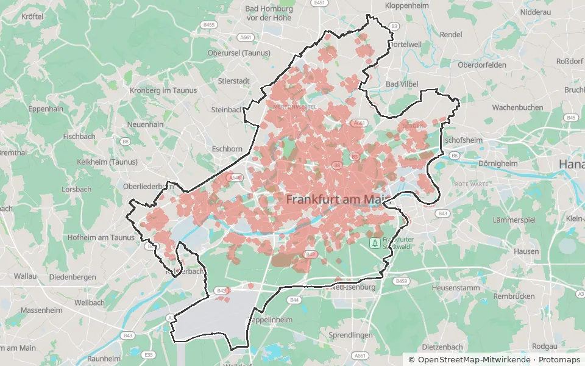
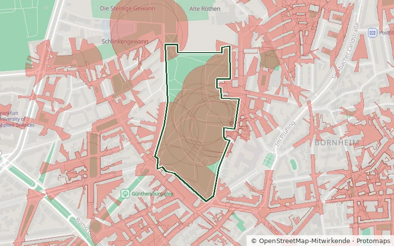
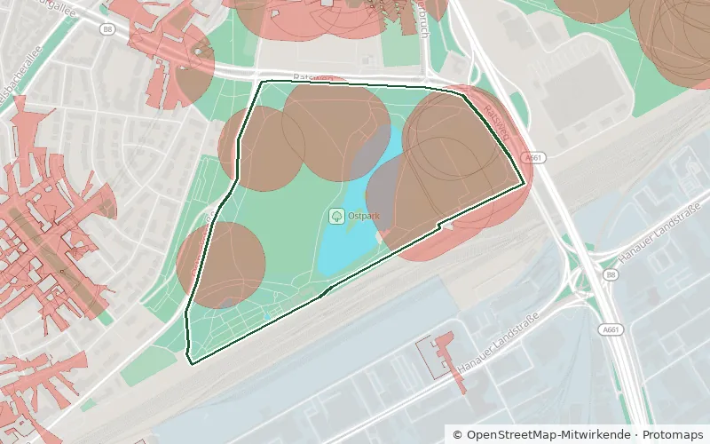
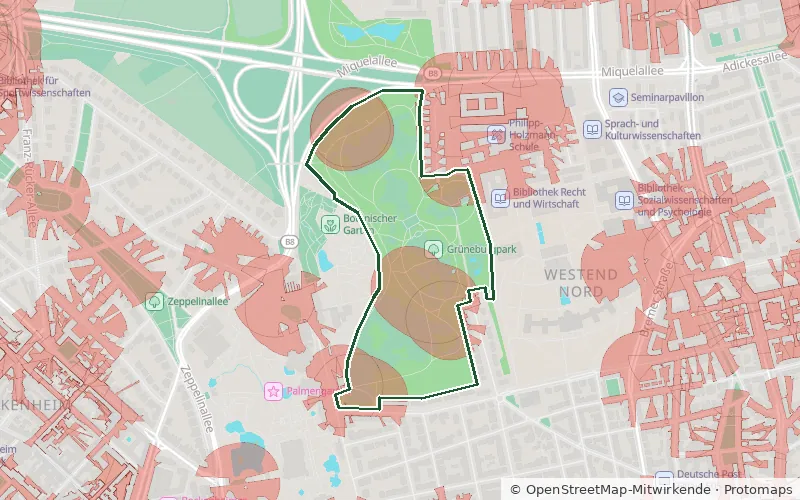
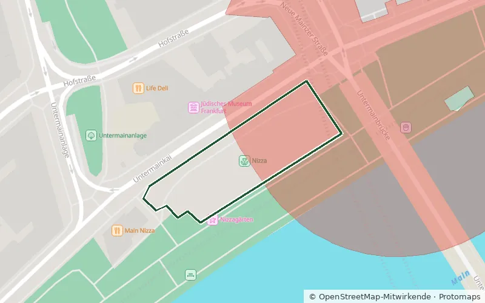
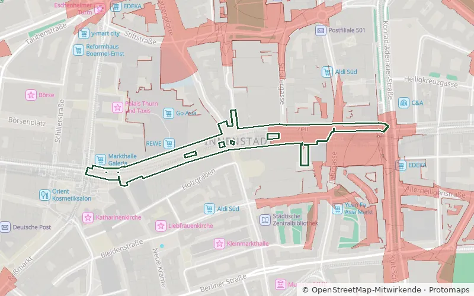
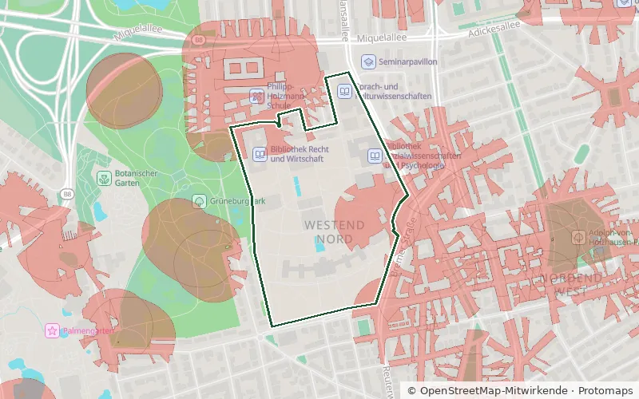

In Frankfurt am Main ist öffentliches Kiffen auf 45 km² verboten, das sind 18,3 % der Stadtfläche von 248 km². Grund sind 2 917 Einrichtungen, in deren Sichtweite nach § 5 KCanG nicht konsumiert werden darf, vor allem Sportstätten und Spielplätze. Sichtweite heißt: höchstens 100 Meter vom Eingangsbereich, und nur dort, wo kein Gebäude die Sicht verdeckt. Dazu kommen die Fußgängerzonen, in denen zwischen 7 und 20 Uhr nicht konsumiert werden darf, und überall die unmittelbare Gegenwart von Kindern und Jugendlichen.
Zieht man den Stadtwald ab, ist der Anteil höher: 17 % der Stadtfläche sind Wald, dort liegen nur 7,9 % in einer Zone, im übrigen Stadtgebiet 20,4 %.

Woher die Zonen kommen
| Einrichtung | Anzahl | Zonenfläche |
|---|---|---|
| Schulen | 229 | 9,5 km² |
| Kitas und Kindergärten | 583 | 10,4 km² |
| Kindertagespflege | 50 | 0,8 km² |
| Spielplätze | 842 | 15,6 km² |
| Kinder- und Jugendeinrichtungen | 50 | 0,9 km² |
| Sportstätten | 1 163 | 22,0 km² |
Die Spalte rechts zählt jede Art für sich; weil sich Zonen verschiedener Einrichtungen überlappen, ist ihre Summe größer als die 45 km² oben. Den größten Teil machen die 1 163 Sportstätten aus, von Bolzplätzen über Turnhallen bis zu Fitnessstudios, gefolgt von 842 Spielplätzen und 583 Kitas.
Auf den Spielplätzen selbst verbietet das Hessische Nichtraucherschutzgesetz außerdem das Rauchen (HessNRSG, § 1). Anbauvereinigungen fehlen in der Tabelle: Wo sie anbauen, ist nicht veröffentlicht.
Parks
Im Günthersburgpark im Nordend liegen 85 % der Fläche in einer Zone: drei Spielplätze und sieben Sportanlagen im Park, Schulen und Kitas am Rand. Im Ostpark sind es 60 %, mit zwei Spielplätzen und sechs Sportanlagen, im Grüneburgpark im Westend 47 %, vor allem wegen seiner vier Spielplätze.



Der Palmengarten kommt auf 26 %, der Volkspark Niddatal (162 ha) auf 25 %. Im Stadtwald liegen nur 3 % in einer Zone.
Mainufer
Auf einem 100 Meter breiten Streifen Land entlang des Mains liegen 18 % in einer Zone. Die Nizza, der Uferpark am Nordufer, liegt zu 50 % in einer Zone, die Weseler Werft im Osten zu 81 %. Eigene Regeln zu Cannabis gibt es am Mainufer nicht; die Stadtpolizei sieht dort nach eigener Auskunft nur gelegentlich vereinzelte Drogenkonsumenten (Magistrat, Februar 2026).

Innenstadt und Plätze
Eine amtliche Liste der Frankfurter Fußgängerzonen haben wir nicht gefunden; maßgeblich ist die Widmung der Straße und das Schild vor Ort. Die Karte zeigt blau, was in OpenStreetMap als Fußgängerbereich eingetragen ist, darunter die Zeil und die Große Bockenheimer Straße. In der Fußgängerzone gilt zwischen 7 und 20 Uhr Konsumverbot, ganz gleich, was die Karte rot zeigt.
Von der Zeil liegen außerdem 32 % in einer Sichtweiten-Zone, vor allem um mehrere Sportstätten. Die Konstablerwache liegt ganz in einer Zone (100 %), der Friedberger Platz zu 97 %, wegen eines Spielplatzes in der Nähe. Der Opernplatz (3 %), der Römerberg (0 %) und die Große Bockenheimer Straße (0 %) liegen außerhalb der Sichtweiten-Zonen.

Hochschulen
Hochschulen sind nach § 5 KCanG keine Verbotsorte. Die Goethe-Universität verbietet den Konsum von Cannabis aber per Hausordnung auf allen ihren Grundstücken, also auch auf dem Campus Westend, außer mit ärztlichem Attest (Hausordnung, § 5). Ebenso die Frankfurt University of Applied Sciences auf ihrem ganzen Campus (Frankfurt UAS). Nach § 5 KCanG allein läge der Campus Westend zu 19 % in einer Zone.

Feste und Veranstaltungen
Auf dem Gelände der Dippemess sind Cannabis und Cannabisprodukte nach den Regeln des Veranstalters nicht erlaubt (Dippemess). Für den Weihnachtsmarkt gilt das nicht: Der Veranstalter hatte die Liste 2025 versehentlich übernommen und korrigiert; dort gelten nur das Verbot in Gegenwart von Minderjährigen und das in der Fußgängerzone (Magistrat, Dezember 2025). Eine eigene Allgemeinverfügung zu Cannabis hat die Stadt nicht erlassen.
Was sonst noch gilt
Hessen hat feste Bußgelder: Konsum in einer Verbotszone, auch in der Fußgängerzone, kostet 500 Euro, in Gegenwart von Kindern und Jugendlichen 1.000 Euro; beim zweiten Mal innerhalb von drei Jahren das Doppelte (Bußgeldkatalog Hessen). Zuständig ist in Frankfurt die Stadt als örtliche Ordnungsbehörde (Zuständigkeitsverordnung). Zahlen zu Bußgeldern nach § 5 KCanG hat sie nicht veröffentlicht. Eigene Verbotszonen für Cannabis hat Frankfurt nicht (Stand 26. November 2026).
Häufige Fragen
Wo darf man in Frankfurt kiffen?
Außerhalb der roten Flächen, außerhalb der Fußgängerzonen zwischen 7 und 20 Uhr, nicht in Gegenwart von Kindern und Jugendlichen und nicht dort, wo ein Hausrecht es verbietet, etwa auf dem Gelände der Goethe-Universität. Eine weiße Fläche auf der Karte heißt nicht, dass Konsum dort erlaubt ist: Die Karte kennt weder Hecken noch Bäume, die die Sicht nehmen, noch Einrichtungen, die in OpenStreetMap fehlen.
Darf man auf dem Campus Westend kiffen?
Nein. Die Hausordnung der Goethe-Universität verbietet Cannabis auf dem ganzen Gelände, auch dort, wo die Karte keine Zone zeigt.
Wie genau ist das?
Die Zonen sind aus OpenStreetMap berechnet, mit Gebäuden als Sichthindernis, und werden täglich neu gerechnet; die Zahlen auf dieser Seite sind vom 26. November 2026. Die Karte ist eine Orientierungshilfe, keine Rechtsauskunft. Wie gerechnet wird und wo die Grenzen liegen, steht auf der Über-Seite.
Fehlt eine Einrichtung oder ist eine falsch eingetragen? Korrekturen in OpenStreetMap erscheinen am Tag darauf auf der Karte; nur eintragen, was es vor Ort wirklich gibt.